| 정답 |  | | |
| 0 | — | 실행 실패
KeyError: 'result' | 1 # 함수18 되돌림 실패: 낱말 · 숫자 꼴이 아닌 글자: <center>0.50.5.50.50.50.50.5 -49.50.50.5 -49.50.5 -504.50.5 |
| 250 | — | 실행 실패
KeyError: 'result' | 1 # 함수18 되돌림 실패: 3 번째 줄은 <b3> 로 시작해야 함: <b2><Workplane><XY><box> 20.0 21.4 19.0< |
| 500 | 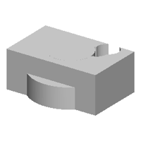 | IoU 0.58 | 1 b0 = place(cq.Workplane("XZ").polyline([(0.0, 0.0), (20.0, 0.0), (20.0, 10.9), (11.0, 10.9), (11.0, 20.0), (0.0, 20.0)]).close().revolve(360, (0, 0, 0), (0, 1, 0)), "z", (18.0, 0.0, 0.0))
2 b1 = place(cq.Workplane("XY").box(48.4, 30.3, 19.9, centered=(True, True, False)).faces(">Z").workplane(origin=(0, 0, 19.9)).center(13.6, 10.6).hole(10.3, 10.9).faces(">Z").workplane(origin=(0, 0, 19.9)).center(12.5, 10.6).hole(10.3, 10.9).faces(">Z").workplane(origin=(0, 0, 19.9)).center(10.5, 5.6).hole(10.3, 10.1), "z", (18.0, 0.0, 0.0))
3 result = b0.union(b1) |
| 750 | 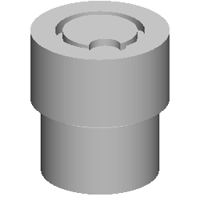 | IoU 0.45 | 1 b0 = place(cq.Workplane("XY").box(30.6, 28.9, 23.7, centered=(True, True, False)).edges("|Z").fillet(1.7), "z", (0.0, 0.0, 19.9))
2 b1 = place(cq.Workplane("XZ").polyline([(0.0, 0.0), (23.7, 0.0), (23.7, 18.9), (15.0, 18.9), (15.0, 31.9), (0.0, 31.9)]).close().revolve(360, (0, 0, 0), (0, 1, 0)).faces(">Z").workplane(origin=(0, 0, 31.9)).center(10.7, -10.6).hole(11.9), "z", (0.0, 0.0, -10.9))
3 b2 = place(cq.Workplane("XZ").polyline([(0.0, 0.0), (28.0, 0.0), (28.0, 29.9), (18.0, 29.9), (18.0, 10.0), (0.0, 10.0)]).close().revolve(360, (0, 0, 0), (0, 1, 0)).faces(">Z").workplane(origin=(0, 0, 29.9)).center(10.7, -10.6).hole(15.8), "z", (0.0, 0.0, 19.9))
4 b3 = place(cq.Workplane("XZ").polyline([(0.0, 0.0), (28.0, 0.0), (28.0, 25.8), (18.0, 25.8), (18.0, 10.0), (0.0, 10.0)]).close().revolve(360, (0, 0, 0), (0, 1, 0)).faces(">Z").workplane(origin=(0, 0, 25.8)).center(10.7, -10.6).hole(15.9), "z", (0.0, 0.0, 19.9))
5 b4 = place(cq.Workplane("XY").circle(23.7).extrude(26.9), "z", (0.0, 0.0, -10.9))
6 b5 = place(cq.Workplane("XZ").polyline([(0.0, 0.0), (23.0, 0.0), (23.0, 10.0), (15.0, 10.0), (15.0, 29.9), (0.0, 29.9)]).close().revolve(360, (0, 0, 0), (0, 1, 0)).faces(">Z").workplane(origin=(0, 0, 29.9)).center(10.0, -10.6).hole(12.9), "z", (0.0, 0.0, 19.9))
7 result = b0.union(b1.union(b2.union(b3.union(b4.union(b5))))) |
| 1000 | 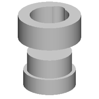 | IoU 0.44 | 1 b0 = place(cq.Workplane("XZ").polyline([(0.0, 0.0), (24.5, 0.0), (24.5, 15.5), (13.5, 15.5), (13.5, 31.9), (0.0, 31.9)]).close().revolve(360, (0, 0, 0), (0, 1, 0)).faces(">Z").workplane(origin=(0, 0, 31.9)).center(-1.2, -10.5).hole(10.0, 15.9), "z", (0.0, 0.0, -23.9))
2 b1 = place(cq.Workplane("XZ").polyline([(0.0, 0.0), (29.5, 0.0), (29.5, 22.9), (18.5, 22.9), (18.5, 5.1), (0.0, 5.1)]).close().revolve(360, (0, 0, 0), (0, 1, 0)).faces(">Z").workplane(origin=(0, 0, 22.9)).center(-1.2, 13.6).hole(15.4), "z", (0.0, 0.0, 19.9))
3 b2 = place(cq.Workplane("XY").circle(21.1).extrude(28.2).faces(">Z").workplane(origin=(0, 0, 28.2)).center(-10.5, 11.9).hole(10.0, 10.0), "z", (0.0, 0.0, -19.9))
4 result = b0.union(b1.union(b2)) |
| 1250 | 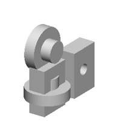 | IoU 0.56 | 1 b0 = place(cq.Workplane("XZ").polyline([(0.0, 0.0), (20.0, 0.0), (20.0, 10.0), (10.0, 10.0), (10.0, 20.0), (0.0, 20.0)]).close().revolve(360, (0, 0, 0), (0, 1, 0)).faces(">Z").workplane(origin=(0, 0, 20.0)).center(1.2, 10.5).hole(10.0, 10.0).faces(">Z").workplane(origin=(0, 0, 20.0)).center(1.2, -10.5).hole(10.0, 10.0), "z", (0.0, -23.2, -13.2))
2 b1 = place(cq.Workplane("XY").box(42.4, 30.4, 15.8, centered=(True, True, False)).faces(">Z").workplane(origin=(0, 0, 15.8)).center(-1.4, -1.4).hole(10.0, 7.2).faces(">Z").workplane(origin=(0, 0, 15.8)).center(-1.4, -1.1).hole(10.0, 7.2), "x", (0.0, 21.2, -13.2))
3 b2 = place(cq.Workplane("XZ").polyline([(0.0, 0.0), (20.0, 0.0), (20.0, 10.0), (10.0, 10.0), (10.0, 20.0), (0.0, 20.0)]).close().revolve(360, (0, 0, 0), (0, 1, 0)).faces(">Z").workplane(origin=(0, 0, 20.0)).center(10.5, -10.5).hole(10.0, 10.0), "x", (0.0, -23.2, 21.2))
4 b3 = place(cq.Workplane("XY").box(42.6, 31.3, 15.9, centered=(True, True, False)).faces(">Z").workplane(origin=(0, 0, 15.9)).center(1.0, 1.3).hole(10.0, 7.2), "x", (0.0, -23.2, -13.2))
5 result = b0.union(b1.union(b2.union(b3))) |
| 1500 | 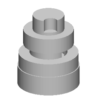 | IoU 0.51 | 1 b0 = place(cq.Workplane("XZ").polyline([(0.0, 0.0), (28.6, 0.0), (28.6, 18.9), (18.0, 18.9), (18.0, 39.0), (0.0, 39.0)]).close().revolve(360, (0, 0, 0), (0, 1, 0)).faces(">Z").workplane(origin=(0, 0, 39.0)).center(10.0, -1.0).hole(15.0, 21.0).faces(">Z").workplane(origin=(0, 0, 39.0)).center(10.5, -1.1).hole(15.1, 21.0), "z", (0.0, 0.0, 0.0))
2 b1 = place(cq.Workplane("XZ").polyline([(0.0, 0.0), (29.6, 0.0), (29.6, 18.9), (20.0, 18.9), (20.0, 3.1), (0.0, 3.1)]).close().revolve(360, (0, 0, 0), (0, 1, 0)).faces(">Z").workplane(origin=(0, 0, 18.9)).center(-14.0, -1.0).hole(16.1, 10.1).faces(">Z").workplane(origin=(0, 0, 18.9)).center(-14.0, -1.0).hole(15.1, 10.1), "z", (0.0, 0.0, -23.3))
3 b2 = place(cq.Workplane("XZ").polyline([(0.0, 0.0), (24.0, 0.0), (24.0, 15.0), (15.0, 15.0), (15.0, 29.9), (0.0, 29.9)]).close().revolve(360, (0, 0, 0), (0, 1, 0)).faces(">Z").workplane(origin=(0, 0, 29.9)).center(10.0, -10.6).hole(13.1, 11.9).faces(">Z").workplane(origin=(0, 0, 29.9)).center(10.0, -10.6).hole(13.1, 11.1), "z", (0.0, 0.0, 23.3))
4 result = b0.union(b1.union(b2)) |
| 1750 | 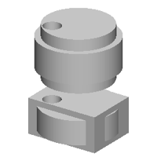 | IoU 0.47 | 1 b0 = place(cq.Workplane("XZ").polyline([(0.0, 0.0), (24.8, 0.0), (24.8, 18.9), (15.0, 18.9), (15.0, 3.9), (0.0, 3.9)]).close().revolve(360, (0, 0, 0), (0, 1, 0)).faces(">Z").workplane(origin=(0, 0, 18.9)).center(-10.2, -10.2).hole(11.9, 10.0).faces(">Z").workplane(origin=(0, 0, 18.9)).center(-10.5, -10.6).hole(10.0, 10.0), "z", (21.0, 0.0, 19.9))
2 b1 = place(cq.Workplane("XY").box(45.2, 33.2, 22.1, centered=(True, True, False)).faces(">Z").workplane(origin=(0, 0, 22.1)).center(-10.7, -10.6).hole(10.9, 10.0), "z", (21.0, 0.0, -19.9))
3 b2 = place(cq.Workplane("XY").circle(21.1).extrude(33.2).faces(">Z").workplane(origin=(0, 0, 33.2)).center(-10.5, -10.6).hole(10.9, 18.9), "z", (21.0, 0.0, 19.9))
4 b3 = place(cq.Workplane("XZ").polyline([(0.0, 0.0), (23.6, 0.0), (23.6, 15.0), (15.0, 15.0), (15.0, 3.3), (0.0, 3.3)]).close().revolve(360, (0, 0, 0), (0, 1, 0)).faces(">Z").workplane(origin=(0, 0, 15.0)).center(-10.5, -10.6).hole(11.9, 10.0), "z", (21.0, 0.0, -19.9))
5 result = b0.union(b1.union(b2.union(b3))) |
| 2000 | 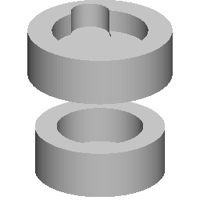 | IoU 0.40 | 1 b0 = place(cq.Workplane("XZ").polyline([(0.0, 0.0), (25.7, 0.0), (25.7, 18.9), (17.1, 18.9), (17.1, 4.4), (0.0, 4.4)]).close().revolve(360, (0, 0, 0), (0, 1, 0)).faces(">Z").workplane(origin=(0, 0, 18.9)).center(-1.4, 1.4).hole(10.0, 10.1).faces(">Z").workplane(origin=(0, 0, 18.9)).center(-1.0, 1.4).hole(10.0, 8.0), "z", (0.0, 0.0, -19.9))
2 b1 = place(cq.Workplane("XZ").polyline([(0.0, 0.0), (28.6, 0.0), (28.6, 18.9), (19.0, 18.9), (19.0, 10.0), (0.0, 10.0)]).close().revolve(360, (0, 0, 0), (0, 1, 0)).faces(">Z").workplane(origin=(0, 0, 18.9)).center(-13.1, 11.9).hole(15.3, 10.0).faces(">Z").workplane(origin=(0, 0, 18.9)).center(-10.4, 10.4).hole(13.6, 10.0), "z", (0.0, 0.0, 21.9))
3 result = b0.union(b1) |
| 2250 | 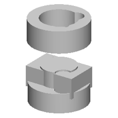 | IoU 0.43 | 1 b0 = place(cq.Workplane("XZ").polyline([(0.0, 0.0), (28.8, 0.0), (28.8, 21.9), (18.0, 21.9), (18.0, 4.9), (0.0, 4.9)]).close().revolve(360, (0, 0, 0), (0, 1, 0)).faces(">Z").workplane(origin=(0, 0, 21.9)).center(10.2, 11.9).hole(15.1, 11.9).faces(">Z").workplane(origin=(0, 0, 21.9)).center(10.2, -10.4).hole(14.1, 11.7), "z", (0.0, 0.0, 23.3))
2 b1 = place(cq.Workplane("XY").box(50.0, 32.2, 20.0, centered=(True, True, False)).faces(">Z").workplane(origin=(0, 0, 20.0)).center(-10.5, 10.0).hole(11.9, 10.1), "z", (0.0, 0.0, -23.3))
3 b2 = place(cq.Workplane("XZ").polyline([(0.0, 0.0), (28.0, 0.0), (28.0, 18.9), (17.0, 18.9), (17.0, 35.0), (0.0, 35.0)]).close().revolve(360, (0, 0, 0), (0, 1, 0)).faces(">Z").workplane(origin=(0, 0, 35.0)).center(14.0, -13.1).hole(16.1, 19.9), "z", (0.0, 0.0, -29.3))
4 result = b0.union(b1.union(b2)) |
| 2500 | 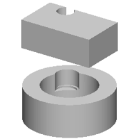 | IoU 0.39 | 1 b0 = place(cq.Workplane("XZ").polyline([(0.0, 0.0), (28.6, 0.0), (28.6, 21.9), (18.0, 21.9), (18.0, 4.9), (0.0, 4.9)]).close().revolve(360, (0, 0, 0), (0, 1, 0)).faces(">Z").workplane(origin=(0, 0, 21.9)).center(-10.0, 11.9).hole(14.6, 10.4).faces(">Z").workplane(origin=(0, 0, 21.9)).center(-10.0, 10.9).hole(14.1, 11.6), "z", (0.0, 0.0, -23.3))
2 b1 = place(cq.Workplane("XY").box(50.0, 30.2, 18.9, centered=(True, True, False)).faces(">Z").workplane(origin=(0, 0, 18.9)).center(-10.0, 10.4).hole(11.2, 7.3).faces(">Z").workplane(origin=(0, 0, 18.9)).center(-10.4, 10.4).hole(10.4, 10.0), "z", (0.0, 0.0, 21.0))
3 result = b0.union(b1) |
| 2750 | 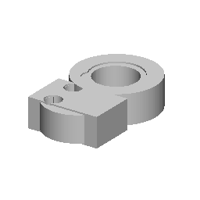 | IoU 0.66 | 1 b0 = place(cq.Workplane("XZ").polyline([(0.0, 0.0), (28.8, 0.0), (28.8, 21.0), (18.0, 21.0), (18.0, 4.9), (0.0, 4.9)]).close().revolve(360, (0, 0, 0), (0, 1, 0)).faces(">Z").workplane(origin=(0, 0, 21.0)).center(-10.0, -11.2).hole(15.1, 10.7).faces(">Z").workplane(origin=(0, 0, 21.0)).center(-10.5, -10.8).hole(14.1, 11.3), "z", (21.0, 21.1, 0.0))
2 b1 = place(cq.Workplane("XY").box(50.6, 32.2, 21.0, centered=(True, True, False)).faces(">Z").workplane(origin=(0, 0, 21.0)).center(-10.7, -10.4).hole(11.9, 10.3).faces(">Z").workplane(origin=(0, 0, 21.0)).center(-10.5, 10.4).hole(11.9, 10.3), "z", (21.0, -20.0, 0.0))
3 b2 = place(cq.Workplane("XZ").polyline([(0.0, 0.0), (23.0, 0.0), (23.0, 18.9), (15.0, 18.9), (15.0, 3.9), (0.0, 3.9)]).close().revolve(360, (0, 0, 0), (0, 1, 0)).faces(">Z").workplane(origin=(0, 0, 18.9)).center(-10.5, -10.8).hole(12.1, 10.1).faces(">Z").workplane(origin=(0, 0, 18.9)).center(-10.2, 10.4).hole(11.9), "z", (21.0, -20.0, 0.0))
4 b3 = place(cq.Workplane("XZ").polyline([(0.0, 0.0), (23.0, 0.0), (23.0, 18.9), (15.0, 18.9), (15.0, 3.9), (0.0, 3.9)]).close().revolve(360, (0, 0, 0), (0, 1, 0)).faces(">Z").workplane(origin=(0, 0, 18.9)).center(10.2, -10.8).hole(11.9), "z", (21.0, 20.1, 0.0))
5 result = b0.union(b1.union(b2.union(b3))) |
| 3000 | 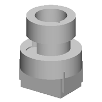 | IoU 0.52 | 1 b0 = place(cq.Workplane("XZ").polyline([(0.0, 0.0), (28.8, 0.0), (28.8, 18.9), (18.0, 18.9), (18.0, 38.6), (0.0, 38.6)]).close().revolve(360, (0, 0, 0), (0, 1, 0)).faces(">Z").workplane(origin=(0, 0, 38.6)).center(-10.0, -13.2).hole(15.1, 21.0).faces(">Z").workplane(origin=(0, 0, 38.6)).center(-10.2, -10.8).hole(15.1, 21.0), "z", (21.0, 0.0, 0.0))
2 b1 = place(cq.Workplane("XY").box(50.6, 30.2, 21.0, centered=(True, True, False)).faces(">Z").workplane(origin=(0, 0, 21.0)).center(-10.7, -10.4).hole(11.4, 10.3).faces(">Z").workplane(origin=(0, 0, 21.0)).center(-10.5, 10.4).hole(11.4, 10.0), "z", (21.0, 0.0, -23.3))
3 b2 = place(cq.Workplane("XZ").polyline([(0.0, 0.0), (23.0, 0.0), (23.0, 18.9), (15.0, 18.9), (15.0, 3.9), (0.0, 3.9)]).close().revolve(360, (0, 0, 0), (0, 1, 0)).faces(">Z").workplane(origin=(0, 0, 18.9)).center(10.4, -10.8).hole(12.1, 10.0).faces(">Z").workplane(origin=(0, 0, 18.9)).center(10.2, -10.8).hole(11.9), "z", (21.0, 0.0, 23.3))
4 b3 = place(cq.Workplane("XY").box(45.2, 33.1, 21.0, centered=(True, True, False)).faces(">Z").workplane(origin=(0, 0, 21.0)).center(-10.8, -10.6).hole(11.9, 10.4), "z", (21.0, 0.0, -29.3))
5 result = b0.union(b1.union(b2.union(b3))) |